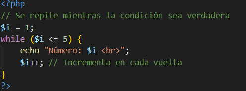
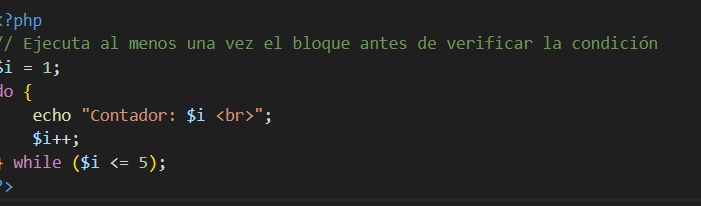
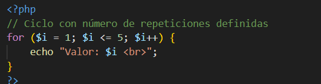
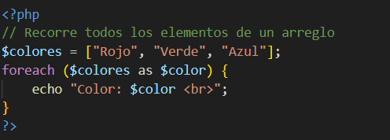
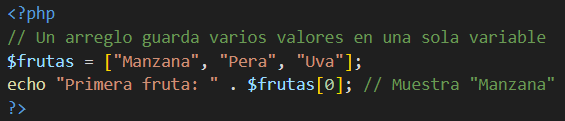
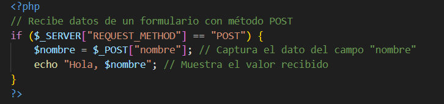
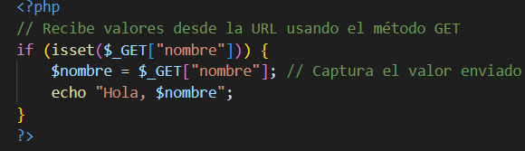
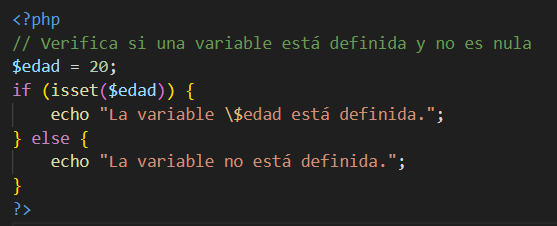
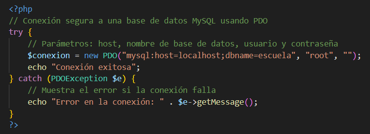

Temas del Segundo Parcial
Sentencia while
La sentencia while permite ejecutar un bloque de código repetidamente mientras una condición sea verdadera. Antes de cada iteración, el programa evalúa la condición; si esta se cumple, se ejecutan las instrucciones internas. Este ciclo es útil cuando no sabemos con exactitud cuántas veces se repetirá un proceso, por ejemplo, leer datos de un archivo hasta llegar al final o solicitar datos al usuario hasta que ingrese un valor válido. Es importante incluir dentro del ciclo una instrucción que modifique la condición, para evitar bucles infinitos.
Sentencia do...while
El ciclo do...while funciona de manera similar al while, con la diferencia de que se ejecuta al menos una vez. Esto se debe a que la condición se evalúa al final del bloque, no al inicio. Es ideal para situaciones en las que necesitamos que el código se ejecute primero, como mostrar un menú interactivo o pedir una contraseña, y luego decidir si repetirlo o no según la respuesta del usuario. Su estructura garantiza que el bloque se ejecute mínimo una vez, incluso si la condición resulta falsa en la primera evaluación.
Sentencia for
La sentencia for se utiliza cuando conocemos la cantidad exacta de veces que queremos que se repita un bloque de código. Está compuesta por tres partes: la inicialización de una variable, la condición de repetición y la actualización (normalmente incremento o decremento). Es muy práctica para recorrer secuencias numéricas, mostrar tablas de multiplicar o procesar datos en un rango determinado. Gracias a su estructura compacta, es uno de los ciclos más usados en programación.
Sentencia foreach
El ciclo foreach está diseñado para recorrer arreglos y colecciones de datos de manera sencilla. A diferencia del for, no requiere un contador o índice, ya que automáticamente toma cada elemento del arreglo. Es perfecto para mostrar listas de nombres, productos, calificaciones u otros datos almacenados en un array. Además, se puede usar con arrays asociativos para acceder tanto a la clave como al valor de cada elemento.
Arrays
Un array en PHP es una estructura que permite almacenar varios valores dentro de una misma variable. Los arrays pueden ser de dos tipos: indexados (con posiciones numéricas) o asociativos (con claves personalizadas). Son esenciales para manejar grandes cantidades de información, como listas de usuarios, registros o resultados de una base de datos. También pueden ser multidimensionales, lo que permite crear tablas o matrices de datos más complejas.
Sentencia $_POST
La variable superglobal $_POST se usa para recopilar información enviada desde un formulario HTML mediante el método POST. Los datos enviados de esta forma no son visibles en la URL, lo que proporciona mayor seguridad al manejar información confidencial. Se usa comúnmente para enviar contraseñas, datos personales o formularios de contacto. En el servidor, PHP puede acceder a los valores enviados y procesarlos fácilmente.
Sentencia $_GET
La variable $_GET obtiene información desde la URL del navegador. Este método es útil para enviar parámetros o filtros sin necesidad de usar un formulario. Los datos son visibles después del signo ? y se pueden capturar con PHP para realizar acciones dinámicas, como mostrar resultados de búsqueda, filtrar productos o identificar usuarios. Sin embargo, no es recomendable para enviar información sensible ya que los datos pueden verse fácilmente.
Función isset()
La función isset() permite verificar si una variable ha sido declarada y contiene un valor distinto de NULL. Es muy útil para prevenir errores al trabajar con formularios o variables opcionales. Por ejemplo, antes de usar un valor recibido de un formulario, se puede comprobar si fue enviado con isset(). También se usa junto con $_POST o $_GET para validar si un campo fue completado por el usuario.
Sentencia PDO
PDO (PHP Data Objects) es una herramienta moderna que facilita la conexión entre PHP y bases de datos, como MySQL, PostgreSQL o SQLite. A diferencia de las funciones tradicionales, PDO ofrece una interfaz más segura y flexible. Permite realizar consultas preparadas, lo que ayuda a prevenir ataques de inyección SQL y mejora el rendimiento. También simplifica el manejo de errores gracias a su sistema de excepciones. Es una de las formas más profesionales y recomendadas para trabajar con bases de datos en PHP.
